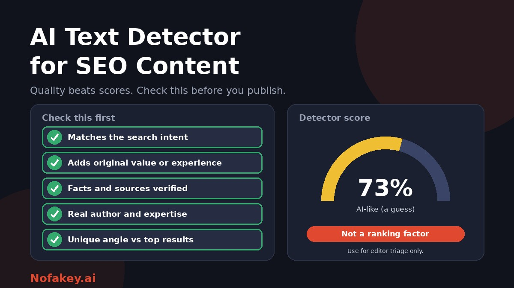

Many SEO teams now paste articles into an AI text detector before publishing, hoping that a low score will keep them safe in search. It is an understandable worry, and an expensive habit, because the score does not tell you what you think it does. This guide explains what an AI detector can and cannot say about SEO content, where it is mildly useful, and what to check instead.
What Google says, and what it doesn't
Google's public position is consistent: it aims to reward content that is helpful and made for people, and how a page was produced is not the point. Its spam policies target content produced at scale mainly to manipulate rankings, whether people, AI or a mix wrote it. Google does not publish a per-page "AI score," and it does not disclose every signal it uses, so nobody outside can say exactly how its systems work. What can be said is that there is no evidence consumer AI detectors are part of ranking, and that a detector's percentage does not predict how a page will perform.
For the full picture, see does Google penalize AI-generated content?
Why detector scores seem linked to SEO
It can feel as though high "AI" scores and poor rankings go together. There is a likely reason that has nothing to do with detection:
- Generic, predictable, low-value writing scores as "AI-like" in detectors.
- The same writing also tends to add little for readers, which is what search systems are built to demote.
- So both react to the same underlying weakness, independently. The detector is not causing the ranking problem, and fixing the score does not fix the page.
The practical lesson is to treat a high score as a prompt to ask "is this page actually useful and original?", not as a verdict on SEO risk.
Where a detector helps, and where it misleads
| Use | Verdict | Why |
|---|---|---|
| Triage outsourced or bulk copy | Mildly useful | A high score can point to template-like or lightly edited text that deserves a closer editor's look |
| Find generic passages in your own draft | Mildly useful | Flagged sections often lack specifics, experience or a point of view |
| Spot-check a batch for obvious spam patterns | Mildly useful | Only as a first filter before human review |
| Predict whether Google will penalise a page | Misleading | The score is not a ranking factor and does not measure helpfulness |
| Prove a writer used or did not use AI | Misleading | Detectors can be wrong in both directions. See are AI detectors accurate? |
| Set a pass-fail threshold | Harmful | It rewards gaming the number, and can penalise honest writers |
| Use the score as a KPI | Harmful | It measures resemblance, not quality or results |
What to check instead: a pre-publish quality checklist
| Check | Questions to ask |
|---|---|
| Search intent | Does the page answer what the searcher really wants, in the right format, quickly? |
| Original value | Does it add experience, data, examples, screenshots or a point of view that competing pages lack? |
| Accuracy | Are facts, figures, quotes and sources verified, and do the links actually support the claims? |
| Expertise and authorship | Is there a real, identifiable author or reviewer with relevant knowledge? |
| Uniqueness | Is it genuinely different from the pages already ranking, not a reworded copy? |
| Usefulness and structure | Is it easy to scan, free of filler, and complete for the topic? |
| Brand voice and trust | Does it sound like you, and would you stand behind every claim? |
| Page experience | Is it fast, readable on mobile and free of intrusive clutter? |
| Disclosure | Is AI use disclosed where readers would expect it, such as health, finance, news and reviews? |
A pre-publish workflow for SEO teams
- Write a brief with the intent and the unique angle. Decide what this page offers that others do not.
- Draft within your AI policy. AI may help, but the draft is a starting point.
- Add what AI cannot: first-hand experience, expert input, original data, quotes and examples.
- Fact-check line by line. Verify every figure and citation, and remove anything you cannot confirm.
- Check originality. Make sure the text is not copied or lightly reworded from other pages.
- Optional: run a detector as a triage aid. Look at which passages are flagged, and ask whether they are generic.
- Do a final editorial pass for voice, clarity, usefulness and trust signals.
- Publish, then watch real results: queries, engagement, conversions and feedback.
- Refresh and prune. Update what is useful, and merge or remove thin pages.
Common mistakes
- Chasing a 0% "AI" score. It is not a goal Google sets, and it cannot be guaranteed.
- Using "humanizer" or paraphrasing tools. They often add awkward phrasing, can introduce errors, and do not make a page more useful.
- Adding filler, odd syntax or typos on purpose. Readers notice, and quality drops.
- Treating detectors as proof of authorship. They are not, and accusing writers on a score damages trust.
- Mass-producing thin pages. This is the pattern that policies actually target.
- Skipping fact-checks. Invented citations and confident errors hurt readers and your credibility.
- Blaming AI for every traffic drop. Updates, competition, technical issues and intent shifts matter too.
If you use a detector anyway
- Treat it as one input, never a gate. A single false positive should not kill a good article.
- Look at flagged passages, not just the total score.
- Compare more than one tool, and expect disagreement. Test them on your own samples with the calculator in AI detector accuracy comparison.
- Mind privacy. Check what a tool does with text you submit, especially for unpublished or client work.
- Be fair to writers, especially non-native English writers who are flagged more often. See AI detector false positives for non-native English writers.
For agencies, freelancers and clients
If you manage content at scale, build triage and review into your process, not a score threshold. See bulk AI content checker for agencies and AI content audit for SEO agencies. For the relationship with writers, see AI writing detectors for freelancers and clients. And if you are worried that a site or page has been flagged, see is my content flagged as AI-generated?
Disclosure and trust
Readers, not detectors, are your long-term audience. Tell them when AI helped, where it matters, and show who stands behind the page. Wording ideas are in how to label AI-generated content. If a link or message from a "ranking service" or tool vendor looks suspicious, paste it into our free checker for a quick first read. It is not an AI-content detector.
Conclusion
An AI text detector can help an editor notice generic passages, but it will not tell you how a page will rank, and chasing its score can make content worse. Build your process around search intent, original value, accuracy, expertise and honest disclosure. Use detectors, if at all, as a triage aid and never as a gate or a KPI. Find more guides on the Nofakey.ai blog.
Frequently asked questions
Does Google use AI detectors to rank content?
Google’s public guidance says it rewards helpful, people-first content however it is produced, and consumer AI detectors are not known to be part of its ranking systems. Google does not publish every signal, so treat any claim about hidden detection with caution.
Do AI detector scores predict rankings?
No. A score estimates how predictable the wording is. Generic, low-value pages may both score high on detectors and perform poorly in search, but the cause is low added value, not the score.
Is it worth running SEO content through an AI detector?
It can help as an editor’s triage tool to find generic passages or check outsourced copy, but it should never be a pass-fail gate or a KPI. Accuracy, originality, expertise and intent match matter more.
Should I rewrite content to get a lower AI score?
Not to chase the score. Rewriting to lower the number often adds filler or hurts clarity. Improve the content for readers by adding specifics, experience and accurate sources.
What should SEO teams check before publishing AI-assisted content?
Search intent match, original value or experience, verified facts and sources, real authorship and expertise, a unique angle compared with top results, and clear disclosure where readers would expect it.
Got a suspicious link or message to check?
Run it through the checker